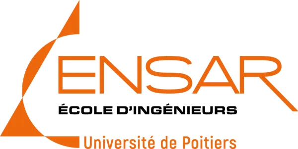

MAM
Méthode permettant de comparer et de choisir entre plusieurs options selon différents critères.
MÉTHODES D’ANALYSE MULTICRITÈRES

Méthode permettant de comparer et de choisir entre plusieurs options selon différents critères.
Option de gestion des risques de l’ENSAR, orientée vers la sécurité des systèmes d’information.
Outil formel permettant d’écrire des instructions compréhensibles par un ordinateur pour exécuter des tâches.
Référence bibliographique de l’article
Rouyendegh, B. D., & Lesani, S. H. (2014)
Object-Oriented Programming Language Selection Using Fuzzy AHP Method.
International Journal of the Analytic Hierarchy Process, Washington D.C., 29 juin – 2 juillet 2014.
« Sélection d’un langage de programmation orienté objet à l’aide de la méthode AHP floue » · Babak Daneshvar Rouyendegh et Seyed Hesamoddin Lesani
Synthèse structurée de l’étude
Choisir un langage de programmation est un problème multicritère : au-delà de la performance, comptent aussi la lisibilité, la maintenance et la diffusion académique et industrielle.
Pour gérer l’incertitude liée aux jugements subjectifs, les auteurs utilisent le Fuzzy AHP, une extension de l’AHP (Analytic Hierarchy Process) qui modélise mieux les hésitations des experts.
Modélisation hiérarchique : objectif, critères, sous-critères, actions
Jugements flous : nombres triangulaires (l, m, u) au lieu de l’échelle 1 à 9
Moyennes géométriques floues pour obtenir des poids agrégés
Valeurs floues transformées en scores nets via l’indice d’optimisme λ
Normalisation des scores pour établir un ordre
Python est jugé le plus adapté grâce à sa lisibilité, sa flexibilité et son adoption académique et industrielle.
Commentaires de la méthode
Permet de mieux capter l’incertitude humaine : tout l’intérêt du FAHP.
Des jugements qualitatifs traduits en valeurs numériques exploitables.
Plusieurs experts peuvent contribuer, leurs jugements sont combinés en un seul.
Aux critères choisis : changer une pondération ou ajouter un critère peut bouleverser le classement.
Un biais implicite : le choix de ce paramètre peut influencer le résultat.
Pas de validation empirique, par exemple la productivité réelle des étudiants dans chaque langage.
Point de vue sécurité des systèmes d’information
Gestion des pointeurs, overflow, exceptions
Analyse statique, vérification formelle, outils de fuzzing
Maturité des gestionnaires de paquets, support SBOM, signatures
Présence d’outils, librairies et frameworks dédiés
Avez-vous des questions ?